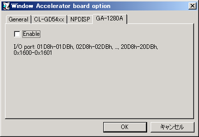

I-O DATA製 GA-1280Aウィンドウアクセラレータはそれほど高速ではありませんが、これに対応したMS-DOSアプリケーションが多数あります。
かなり広い範囲のI/Oポートを使用しますので、競合が発生しやすいです。 標準設定ではLGY-98のI/Oポートが競合しますので、同時に使用する場合はLGY-98のI/Oポートをずらす必要があります。
チェックを入れるとI-O DATA GA-1280Aウィンドウアクセラレータが有効になります。この設定はリセット後に反映されます。